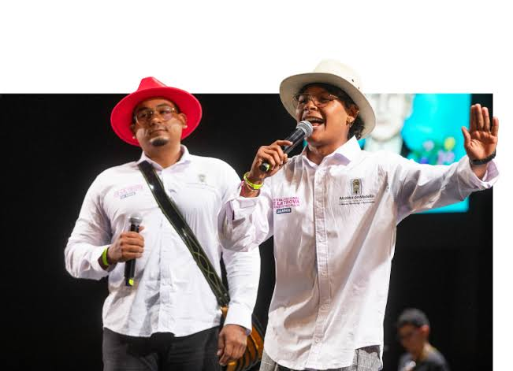
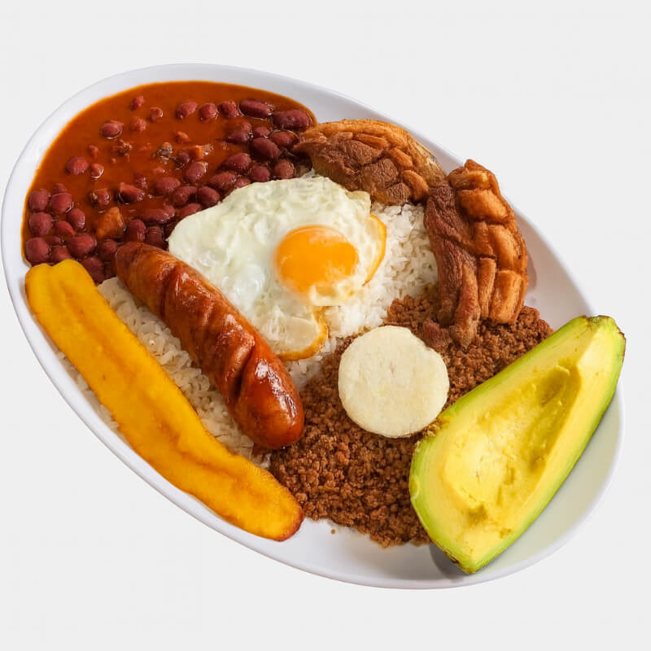

Noticias de la Feria de las Flores

Desfile de Silleteros
El Desfile de los Silleteros es el evento central y más emblemático de la Feria de las Flores que se realiza cada año en Medellín, Antioquia (Colombia). ¿Qué es? Es un colorido desfile donde campesinos de la vereda Santa Elena (y otros corregimientos cercanos) cargan sobre sus espaldas silletas hechas artesanalmente con miles de flores naturales. El origen: Las silletas eran tradicionalmente un medio de transporte de carga y personas utilizado por los silleteros en la época colonial y republicana para bajar sus productos agrícolas y flores hasta Medellín. El significado: Es un homenaje a la tradición, al trabajo del campesino antioqueño, a la cultura silletera y a la riqueza floral de la región, la cual fue declarada Patrimonio Cultural de la Nación.

Conciertos
Los conciertos de la Feria de las Flores se dividen en dos grandes experiencias: El Súper Concierto (Estadio Atanasio Girardot): El evento masivo privado más esperado, que reúne a figuras estelares de la música urbana, popular, vallenata y tropical (con artistas como Carín León y Silvestre Dangond). Conciertos y Tablados Gratuitos: Eventos abiertos al público distribuidos por comunas, corregimientos y parques culturales, que llevan orquestas, música tradicional y fiesta popular a toda la ciudad.

Eventos culturales
La cultura de la Feria de las Flores es la máxima expresión de la identidad antioqueña, donde convergen la tradición campesina, la hospitalidad y la alegría de su gente. Gira en torno al orgullo por el campo, la riqueza floral de la región y la música popular como la trova y el despecho, convirtiendo las calles en un punto de encuentro para celebrar las raíces, el folclor y la vida en comunidad.

Gastronomía Antioqueña
La gastronomía paisa es una cocina tradicional, abundante y reconfortante, nacida de la herencia campesina de la región antioqueña. Se caracteriza por el uso de ingredientes locales como el maíz, el fríjol, el plátano, la carne de res y el cerdo, dando como resultado platos tan emblemáticos como la bandeja paisa, la arepa de maíz, la mazamorra y los calentaos, cargados de sabor y tradición hogareña.

Autos Clásicos
El Desfile de Autos Clásicos y Antiguos es uno de los eventos más esperados y con mayor tradición de la Feria de las Flores de Medellín. ¿Qué es? Es una impresionante caravana rodante compuesta por cientos de vehículos de época como automóviles de colección, joyas automotrices de antaño y camiones militares históricos perfectamente conservados y restaurados. El recorrido: Los autos recorren las principales vías de la ciudad y municipios cercanos ante la mirada de miles de espectadores apostados en las calles. La cultura: Mucho más que una exhibición de motores, es un museo en movimiento donde los participantes y el público suelen vestirse con la moda de la época de sus vehículos, convirtiéndolo en un nostálgico viaje al pasado que celebra la historia automotriz y la alegría de la feria.